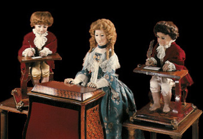

Pierre and Henri Louis Jacquet-Droz (Schweiz) erfanden einen Schreib-Automaten. Die lebensähnliche Figur eines Knaben konnte Texte verfassen, die aus bis zu 40 Buchstaben bestanden. Weiters konstruierten sie eine Dame, die Klavier spielen konnte, und einen Automaten, der ein Porträt von König Louis XV. zeichnete.